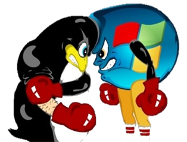
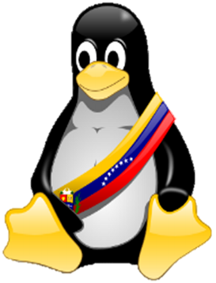

| ¡Hay un pingüino en mi bolsillo! | |
 |
Programación:
|
Puntos a tratar:
Día 15/07/2020:
Día 16/07/2020:
Día 17/07/2020: |
Facilitador: Lissette Torrealba |
| Lugar: Edif. Giraluna, Sala Bicentenaria | |
| Fecha: Miércoles 15 de Julio al Viernes 17 de Julio de 2020 | |
| Hora: 8:00am - 12:00pm | |
| Libertad, privacidad y ética | |
|  | Programación:
|
Puntos a tratar:
Día 21/09/2020:
Día 22/09/2020:
Día 23/09/2020: |
Facilitador: Sullin Santaella |
| Lugar: Edif. Giraluna, Sala de Telemática | |
| Fecha: Lunes 21 al Miércoles 23 de Septiembre de 2020 | |
| Hora: 8:00am - 12:00pm | |
| Software Libre en la Educación | |
|  | Programación:
|
Puntos a tratar:
Día 28/10/2020:
Día 29/10/2020:
Día 30/10/2020: |
Facilitador: Iris Daza |
| Lugar: Edif. La Hiladera, planta baja | |
| Fecha: Miércoles 28 al Viernes 30 de Octubre de 2020 | |
| Hora: 8:00am - 12:00pm | |